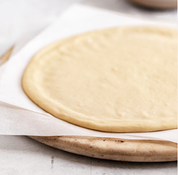

Pizza

Description
Add your favorite toppings to this tasty 30-min homemade pizza crust for a new quick-and-easy family favorite meal.
Ingredients
- 1-3/4 to 2-1/4 cups all purpose flour
- 1 envelope Fleischmann's® Pizza Crust Yeast (or Fleischmann’s® RapidRise® Instant Yeast)r
- 1-1/2 teaspoons sugarr
- 3/4 teaspoon saltr
- 2/3 cup very warm water (120° to 130°F)*r
- 3 tablespoons corn oilr
- 1/2 to 1 cup pizza saucer
- 1 to 2 cups (4 to 8 ounces or 125 to 250g) shredded mozzarella cheeser
Steps
- Preheat oven to 425°F.
- Combine 1 cup flour, undissolved yeast, sugar and salt in a large bowl. Add very warm water and oil; mix until well blended, about 1 minute. Gradually add enough remaining flour to make a soft dough. Dough should form a ball and will be slightly sticky. Knead** on a floured surface, adding additional flour if necessary, until smooth and elastic, about 4 minutes. (If using RapidRise Yeast, let dough rest at this point for 10 minutes.)
- Pat dough with floured hands to fill greased pizza pan or baking sheet. OR roll dough on a floured counter to 12-inch circle; place in greased pizza pan or baking sheet. Form a rim by pinching the edge of the dough.
- Spread with pizza sauce. Top with desired toppings and sprinkle with cheese.
- Bake on lowest oven rack for 12 to 15 minutes, until cheese is bubbly and crust is browned.